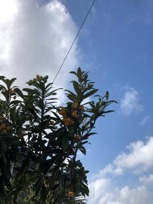
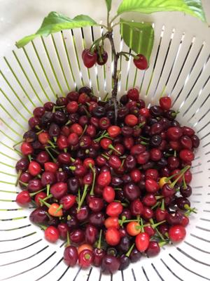

うるがいの話 ある日
最新: 三連符の工工四とは【うるがいの話 ある日】とは 一日だけのプログです
『うるがいの話』の最新一日だけのプログで、通信料が少なく経済的だ。カニの画像をクリックすると全ての日付が載る『うるがいの話』サイトを表示します
|
|
【うるがいの話】 うるがい(ｳﾙｶﾞｲ urugai)とは、『もずくがに』の名前でとても大きくなります。 |
|---|---|
|
|
【カミマヤーの話】 猫のことを方言でマヤーといいます。カミマヤー（kamimayaa）とは、神の猫のことです。 |
|
【たながぁの音楽】 たながぁ（ﾀﾅｶﾞｰ tanagaa）とは手長えびのことで、何種類かあり大きいのは車 エビぐらいになります。 |

|
【ぶながぁの話】 ぶながぁ(ﾌﾞﾅｶﾞｰ bunagaa)とは、赤い髪の毛、赤い身体、そして身長は１ｍ２０ｃｍ ぐらい、川の蟹を食べているの目撃された。場所は沖縄県国頭郡大宜味村のと ある村僕の隣近所に住んでいる爺さんから、聞いた話です。 |
|
|
【ギーマの話】 ギーマ(giima)とは、山原の里山に咲くスズランに似た、 花を付けます。実は食べられます、 気が付くと口の周りが紫になっています。 |
2023年03月18日 (土）三連符の工工四とは
16:59
 
かぎやで風節を箏の演奏を楽譜ソフトで行いたくて、箏を調べた。そして箏の
楽譜を図書館から借りる、ただし工工四しかない。うーん、工工四を解析する
かと、いきなり重たいかぎやで風節だと大変なので、箏と三線の工工四がある
『海ぬちんぼらー節』の五線譜の楽譜と工工四が載っている本を探す。ところ
が、楽譜を見るとバリバリの三連符、アレ？あたっているかとユーチューブ動
画で演奏を聴いてみる。あたっている三連符だ、三連符の工工四ってこれまで
の本やネットに説明がない。で初心に戻り、三線の本（複数）をみてみる。勘
所も低い尺や高い尺など・・・・、でマスマス深みに入っていく。そして工工
四の必ずしも統一されているのではなく。といろいろ、苦労した結果、工工四
は、勘所の押さえ方が羅列されているダケ！、シャープや、フラットの音階も
なし（記述している本もあったが）、音の長さもなし。で、分かったことは演
奏したい曲があって、楽器でそれを演奏するときの音階を記述している、楽譜
ということに理解した（いまのところ）。
１６時５３分 ビットコインの総資産 ￥１０、４６２（↑４２２）おお！